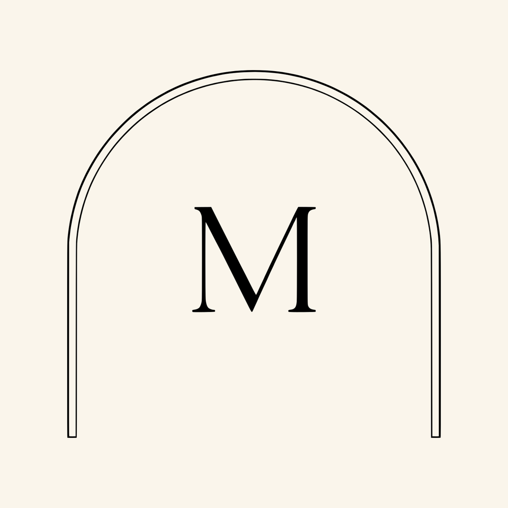
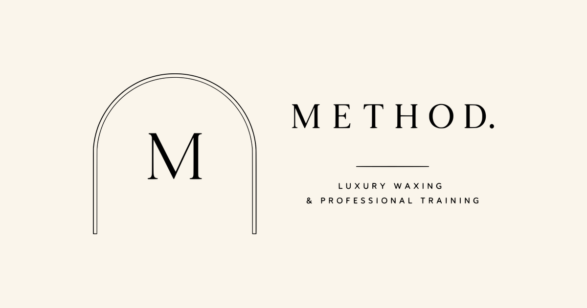

Brand assets
The METHOD logo kit
Every version of the logo, in every file type you will need, built from the artwork you approved. Vectors scale to any size. Rasters are ready for web and social.
Primary logo
The full lockup. Use this wherever there is room, and anywhere someone is meeting the brand for the first time.
Horizontal logo
The same brand in a wide shape, for the website header, email signatures, and anywhere short and wide.
Wordmark and stacked
For narrow or busy placements where the arch would get lost, or where the arch already appears nearby.
Icon and submark
The M is your smallest, hardest-working mark: browser tabs, app icons, a foil stamp on a card. The submark is the arch squared up for profile pictures.
How it holds up as it shrinks. Below roughly 40 pixels the arch hairlines start to disappear, which is exactly why the M exists on its own.
Website and social
Profile pictures, the browser tab icon, phone app icons, and the image that appears when someone shares the website in a text or on Facebook.

Avatar · cream
Link preview · 1200 x 630Colour
Which file do I use?
| I need to | Use |
|---|---|
| Put the logo on the website | Horizontal or primary, .svg |
| Send to a printer, sign maker, or embroiderer | 06-print-vector, the .eps |
| Post to Instagram or Facebook | Primary, the on-cream.png |
| Set a profile picture | social-avatar-cream-1000.png |
| Place on emerald or a dark photo | Any file ending -white |
| Browser tab icon | favicon.ico |
Rules of thumb
- Give it room. Keep clear space around the logo equal to the height of the M in the wordmark.
- Never stretch it. Scale proportionally, always.
- Do not recolour it outside the colourways above.
- Never put the black logo on a dark background. Use the white version.
- Do not rebuild the tagline in another font. Use the supplied files.
- Below about 40px, drop to the M. The arch hairlines vanish at small sizes.